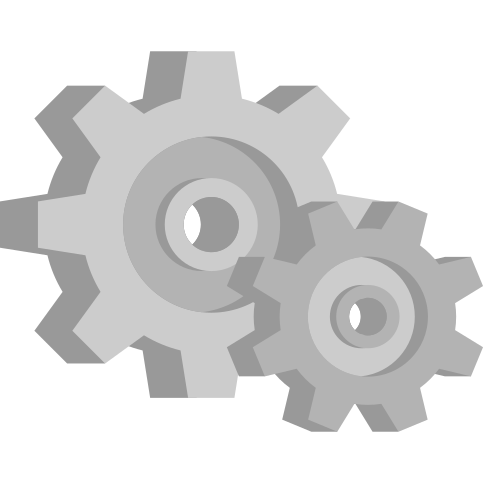

THE INDUSTRIAL REVOLUTION

This period marked a significant advancement in technology where people went from manufacturing solely with their hand to using machines. There was a rise in people working in fields such as mechanical and civil engineering. Since machines were created, tasks like cooking, farming, and weaving became more efficient. Everything from kitchen items to vehicles started advancing, and as a result, the average person’s life changed quickly.
RAILWAYS
By sometime close to the end of the Industrial Revolution, railroads were completely built and carried trains more often. Before, trains were directly moving on the road. The trains on these railroads also did not need any human or animal to mobilize unlike in pre-Industrial times. In earlier times, trains had limited capabilities and could only carry a certain amount of weight. Today, trains can have a much larger carrying capacity and are quickly advancing.
THE TELEPHONE
Alexander Graham Bell created and patented the first telephone. The old telephone consisted of a microphone and a receiver. The sound of the telephone gets transmitted through currents and creates vibrations in metal parts in order to send a message. Nowadays phones are transmitted through light. Immediately after the phone entered the market, it became popular in many parts of the world.
THE TELEGRAPH: A PRECURSOR
This was an invention in which written signals were sent long distance. This invention used 26 wires, one for each letter of the alphabet. The signals consisted of mostly symbols as opposed to visible letters. The earliest versions of them were created in Europe. However, Samuel Morse (whom the morse code was named after) envisioned a more advanced telegraph in which messages were sent through magnetic currents.
THE RADIO
In 1894, Guglielmo Marconi attempted to utilize sound transmission through electromagnetic waves. He created a telegraph in which the receiver detects a signal and conducts electricity, and the transmitter sends signals. He used the antenna for the telegraph to receive and transmit signals at a long distance. In 1904, Reginald Fessenden started making public audio broadcasts. A decade later, radio became widely used in the U.S. as a form of communication.
NUCLEAR WEAPONS
After it was discovered that uranium could create atom bombs, the U.S. government created The Manhattan Project consisting of thousands of scientists from around the world. The aim was to create atomic weapons as fast as possible before adversaries of the U.S. could do so. The operation created the powerful bombs dropped in Hiroshima and Nagasaki, and eventually WWII came to an end. The Manhattan Project’s decisions in WWII have become very controversial over the years with many citing the damage to civilians and environmental destruction.
THE COMPUTER
By this time, the earliest modern computers were developed in the United States. Although computers have been conceptualized by Babbage, the computers that have come out at this time were programmable. A popular computer that came out at this time was the ENIAC or Electronic Numerical Integrator and Computer in 1945. Within a few seconds, the computer was able to make very precise calculations. Later, another computer was designed, and it had greater memory and storage. Although computers were very functionable and played a big role in the world back then, it wasn’t until the 1980s when the average person was able to afford and use them at the comfort of their home.
HISTORY:
Charles Babbage had envisioned a computer which would be an advanced calculator. This computer would have a storage and processor, a set of punching cards, as well as the ability to solve complex math problems. An incomplete prototype of the mechanical keyboard called the Analytical Engine was made in the 19th century. Even though the model was never fully developed, it paved the way for the most important device in modern times.
THE SPACE SHUTTLE
At this time, many rockets were being created and innovated. By 1981, space shuttles were built and were used until 2011. These were different from traditional rockets due to the fact that they could carry satellites. These shuttles came with two booster rockets and an external tank. A total of five shuttles were launched by NASA.
HISTORY:
By the late 1950s the Space Race between the US and USSR was at its height as the result of Cold War issues. The Soviet Union launched the Sputnik rocket, which led to the US founding of NASA. The US government made it a mission to launch astronauts by the end of the 1960s. This led to the United States building and innovating better rockets and spaceships.
GENETIC ENGINEERING
Genetic engineering was introduced to the public. Scientists were able to extract genes from certain cells and place them into others. Genetic engineering was first experimented on bacteria, animals, and plants. This brought many advantages such as the production of food, and helping humans avoid and become more resistant to health problems.